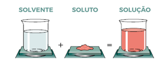

Átomo Digital
Átomo Digital
Bem-vindo ao Portal de Aprendizado de Química!
Este site foi criado para auxiliar estudantes no aprendizado de química de forma simples, interativa e direta. Aqui você encontra explicações, materiais, exercícios e ferramentas para tornar o estudo mais eficiente.
Explore conteúdos sobre ligações químicas, reações, termoquímica e muito mais!

Ligações Químicas
Entenda como os átomos se unem para formar substâncias.

Funções Inorgânicas
Ácidos, bases, sais e óxidos explicados de forma simples.

Estequiometria
Calcule quantidades de reagentes e produtos nas reações.

Termoquímica
Estude calor liberado ou absorvido nas reações químicas.
Soluções e Concentração
Entenda solventes, solutos e cálculos de concentração.

Propriedades Coligativas
Veja como partículas influenciam o comportamento das soluções.

Eletroquímica
Reações que envolvem transferência de elétrons.

Química Orgânica
Funções orgânicas e tipos de reações.

Química Ambiental
Poluição, tratamento de água e impactos ambientais.

Separação de Misturas
Métodos para separar componentes de misturas.
📘 Simulado ENEM de Química
Teste seus conhecimentos com questões nos estilos do ENEM, abrangendo todos os conteúdos do site.
Ir para o Simulado